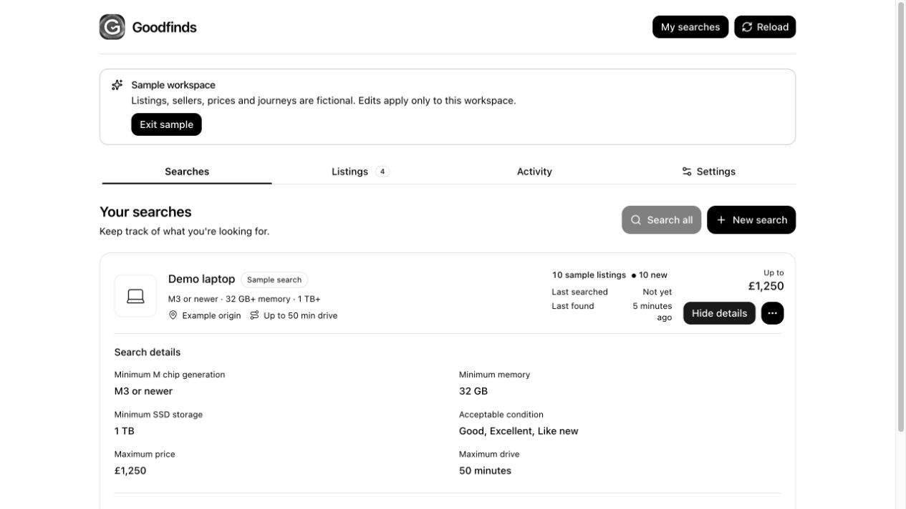

Start with what
matters to you.
A budget. The must-haves. The things you’d prefer. Turn a conversation into a search you can refine.
YOUR MARKETPLACE SEARCH, TOGETHER
Describe what you’re looking for. Compare what matters.
Keep the evidence and the next steps in one place.
Real Goodfinds panels · Illustrated conversation · Fictional demo data
Download video ↓Good finds. Your terms.
Illustrated conversation: “Find a MacBook Pro under £1,250, with at least 32 GB memory and 1 TB storage.”
Actual Goodfinds interface: A fictional search shows its budget, minimum memory and storage. A sample listing brings its asking price and specifications together. The message review lets you ask about battery health and the charger before taking the next step.
Goodfinds. Keep your search together. All demo data is fictional; no seller is contacted.
A LITTLE MORE CLARITY
From the first brief to the seller’s reply, keep the details that make a difference.
A budget. The must-haves. The things you’d prefer. Turn a conversation into a search you can refine.
Bring specifications, condition and saved evidence together. Compare listings against your requirements.
Prepare seller messages and collection plans. Review the exact message before anything is sent.
TAKE A CLOSER LOOK
Explore three moments in a sample search.

Screenshots from the isolated sample workspace. All listings, prices, people and journeys are fictional.
A WORKSPACE THAT STAYS WITH YOU
Goodfinds stores your searches, listing evidence and conversations locally, so you can return to the details without starting again.
Marketplace credentials and browser sessions stay separate. Connected browsing and AI use your host app’s services and settings.
Goodfinds supplies tools, a shopping skill and an interactive panel to a compatible local MCP host. It uses the host’s AI and browser tools to help with your search. In ChatGPT environments that support local plugins and MCP panels, you can work through a conversation and inspect the details in the panel. Availability depends on your app, plan and workspace settings.
Goodfinds recognizes Facebook Marketplace, eBay, Vinted, Gumtree, UK Auto Trader and Craigslist. Coverage varies: Facebook uses compatible host browser tools; eBay’s Browse API needs application credentials. Other marketplaces support navigation and evidence import. See current marketplace coverage ↗
Yes, through your host’s scheduling tools. Recurring checks require a configured schedule, an awake device and a running host app. You can keep a search as a one-off instead.
You review the exact message before sending. Saving a draft does not contact a seller. Available contact routes depend on the marketplace and your host’s browser support.
MAKE ROOM FOR A GOOD FIND
Add a focused marketplace workspace to a compatible MCP host. Installed packages include the server and interface, with no Bun or Node installation needed.
Version 0.1 · macOS, Windows & Linux build targets
Browser actions require compatible
host tools. Scheduled checks need a host schedule, an awake device and a running host app.